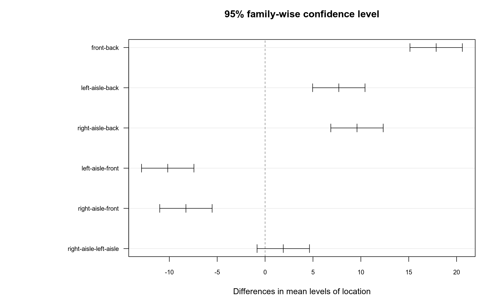

- 1
-
Run this only if you have not installed
mosaicbefore. Installing a package once is enough.
In Week 7 we used a two-sample t-test to compare the means of two groups.
But many real questions have more than two groups.
“Are sales different across Monday, Tuesday, Wednesday, Thursday, and Friday?”
“Are sales different across front, back, left-aisle, and right-aisle locations?”
“Do students using different study methods have different exam scores?”
“Do patients receiving different treatments recover at different speeds?”
For questions like these we use one-way ANOVA.
If we have 4 locations, we could compare:
That is already 6 tests.
The more tests we run, the more likely we are to find a “significant” result just by chance.
ANOVA first asks one bigger question:
“Is there evidence that at least one group mean is different?”
Imagine we work for an electronics store.
The store sells screen protectors for phones.
The manager wants to know what affects daily sales.
We have five variables:
weekday: which day of the weeklocation: where the screen protectors were placedstore_visitors: number of customers who visited the storediscount_percent: discount applied to screen protectorsunits_sold: how many screen protectors were soldToday we will ask two different ANOVA questions using the same data.
Today we will use the mosaic package for easy summary statistics.
tidyverse for data and plotting, and mosaic for easy summary statistics.
screen_sales.
# A tibble: 120 × 5
weekday location store_visitors discount_percent units_sold
<chr> <chr> <int> <int> <int>
1 Monday front 235 10 31
2 Monday left-aisle 188 0 22
3 Monday right-aisle 230 5 32
4 Monday back 237 0 16
5 Tuesday front 219 10 36
6 Tuesday left-aisle 221 10 32
7 Tuesday right-aisle 223 10 28
8 Tuesday back 165 0 11
9 Wednesday front 290 0 30
10 Wednesday left-aisle 280 0 20
# ℹ 110 more rowsEach row is one sales observation.
weekday: which day of the weeklocation: where the screen protectors were placedstore_visitors: number of customers who visited the storediscount_percent: discount applied to screen protectorsunits_sold: how many screen protectors were soldDo average screen protector sales differ by weekday?
\[ H_0:\ \mu_{Mon} = \mu_{Tue} = \mu_{Wed} = \mu_{Thu} = \mu_{Fri} \]
\[ H_a:\ \text{At least one weekday mean is different.} \]
Do average screen protector sales differ by location?
\[ H_0:\ \mu_{front} = \mu_{back} = \mu_{left} = \mu_{right} \]
\[ H_a:\ \text{At least one location mean is different.} \]
Before doing any test, we first look at the group means.
We use favstats() from the mosaic package.
units_sold, split it by weekday, and use the data set named screen_sales.
weekday min Q1 median Q3 max mean sd n missing
1 Friday 12 17.50 25.0 29.5 45 24.83333 8.775790 24 0
2 Monday 11 19.75 23.5 29.5 36 23.70833 6.675583 24 0
3 Thursday 13 21.75 24.0 29.5 39 25.95833 6.810983 24 0
4 Tuesday 9 18.75 25.0 31.0 40 24.83333 8.057762 24 0
5 Wednesday 5 19.50 26.0 30.0 37 24.45833 7.638456 24 0The mean column shows average sales for each weekday.
The weekday means are all around 24 to 26 units.
The sd column shows that sales vary quite a lot inside each weekday.
So visually we expect a lot of overlap.
But we should not decide only from the means. Next we draw a boxplot.
For a boxplot we need:
x axisy axisNow we can color the boxes by weekday.
Because weekday is a variable, we put fill = weekday inside aes().
Finally we clean up the plot with a theme.
The boxes are at similar heights.
The medians are close to each other.
The boxes overlap a lot.
This suggests that weekday probably does not create a large difference in sales.
But the boxplot hides the individual observations. Let’s add the points.
The points are placed exactly on top of the weekday name.
If two observations have the same or similar sales value, they overlap.
This makes it hard to see how many observations we have.
We need to move the points slightly left and right.
That is what geom_jitter() does.
Now the points are easier to see, but each point still belongs to its weekday.
Now we ask the formal question:
Are the weekday means different enough to reject \(H_0\)?
units_sold using weekday, with the data set named screen_sales.
Call:
aov(formula = units_sold ~ weekday, data = screen_sales)
Terms:
weekday Residuals
Sum of Squares 63.450 6698.542
Deg. of Freedom 4 115
Residual standard error: 7.63205
Estimated effects may be unbalancedThe previous code created the ANOVA model.
Now we add summary() to see the ANOVA table.
The important line is the weekday line.
Df: \(df_A = k - 1\) for weekday; \(df_W = N - k\) for Residuals.Sum Sq: weekday row is \(SSA = \sum_j n_j(\bar{x}_j - \bar{x})^2\).Residuals row is \(SSW = \sum_j\sum_i (x_{ij} - \bar{x}_j)^2\).Mean Sq: \(MSA = SSA / df_A\) and \(MSW = SSW / df_W\).F value: \(F = MSA / MSW\).Pr(>F): the p-value, \(P(F_{df_A,df_W} \geq F_{\text{observed}})\) if \(H_0\) is true.For weekday, the p-value is about 0.895.
Our decision rule:
Here:
\[ p = 0.895 > 0.05 \]
So we fail to reject \(H_0\).
Conclusion:
In this dataset, we do not have evidence that average screen protector sales differ by weekday.
Now we ask a different question with the same outcome.
Instead of grouping sales by weekday, we group sales by location.
units_sold, split it by location, and use the data set named screen_sales.
location min Q1 median Q3 max mean sd n missing
1 back 5 13.25 16.0 18.00 26 15.96667 4.405978 30 0
2 front 27 31.00 34.0 36.75 45 33.83333 4.060604 30 0
3 left-aisle 15 21.00 23.5 26.75 32 23.66667 4.204541 30 0
4 right-aisle 19 22.25 25.0 28.00 32 25.56667 3.539758 30 0The front location has the highest mean sales.
The back location has the lowest mean sales.
left-aisle and right-aisle are in the middle.
This looks much more different than the weekday table.
Now we check the distribution with a boxplot.
The front box is clearly higher.
The back box is clearly lower.
The aisle locations are between them.
The boxes overlap much less than the weekday boxes.
This suggests that location may matter for screen protector sales.
geom_point() puts all observations for the same location on one vertical line.
Some points hide other points.
We can see the general pattern, but the raw data are still crowded.
So again we use geom_jitter().
Now we see both the summary shape and the individual observations.
Now the formal question:
Are the location means different enough to reject \(H_0\)?
units_sold using location, with the data set named screen_sales.
Call:
aov(formula = units_sold ~ location, data = screen_sales)
Terms:
location Residuals
Sum of Squares 4844.825 1917.167
Deg. of Freedom 3 116
Residual standard error: 4.065378
Estimated effects may be unbalancedAgain, the first ANOVA code creates the model.
Now we add summary() to see the ANOVA table.
The important line is the location line.
Df: \(df_A = k - 1\) for location; \(df_W = N - k\) for Residuals.Sum Sq: location row is \(SSA = \sum_j n_j(\bar{x}_j - \bar{x})^2\).Residuals row is \(SSW = \sum_j\sum_i (x_{ij} - \bar{x}_j)^2\).Mean Sq: \(MSA = SSA / df_A\) and \(MSW = SSW / df_W\).F value: \(F = MSA / MSW\).Pr(>F): the p-value, \(P(F_{df_A,df_W} \geq F_{\text{observed}})\) if \(H_0\) is true.For location, the p-value is very small: R reports p < 2e-16.
location, the p-value is very small: R reports p < 2e-16.That means:
\[ p < 0.05 \]
So we reject \(H_0\).
Conclusion:
In this dataset, average screen protector sales differ by location.
“Is at least one group mean different?”
“Which groups are different from which?”
For that we use a Tukey test.
Tukey multiple comparisons of means
95% family-wise confidence level
Fit: aov(formula = units_sold ~ location, data = screen_sales)
$location
diff lwr upr p adj
front-back 17.866667 15.1305127 20.602821 0.0000000
left-aisle-back 7.700000 4.9638461 10.436154 0.0000000
right-aisle-back 9.600000 6.8638461 12.336154 0.0000000
left-aisle-front -10.166667 -12.9028206 -7.430513 0.0000000
right-aisle-front -8.266667 -11.0028206 -5.530513 0.0000000
right-aisle-left-aisle 1.900000 -0.8361539 4.636154 0.2738489$location
diff lwr upr p adj
front-back 17.866667 15.1305127 20.602821 0.0000000
left-aisle-back 7.700000 4.9638461 10.436154 0.0000000
right-aisle-back 9.600000 6.8638461 12.336154 0.0000000
left-aisle-front -10.166667 -12.9028206 -7.430513 0.0000000
right-aisle-front -8.266667 -11.0028206 -5.530513 0.0000000
right-aisle-left-aisle 1.900000 -0.8361539 4.636154 0.2738489diff: difference between two group means.
lwr and upr: lower and upper ends of the confidence interval.
p adj: adjusted p-value.
If p adj < 0.05, that pair is significantly different.
If the confidence interval contains 0, that pair is not clearly different.
The Tukey output is useful, but it has many numbers.
We can also ask R to draw the Tukey confidence intervals.
If an interval crosses 0, that pair is not clearly different. If it does not cross 0, that pair is significantly different.

front is significantly higher than back.
front is significantly higher than left-aisle.
front is significantly higher than right-aisle.
back is significantly lower than the aisle locations.
But left-aisle and right-aisle are not significantly different from each other.
Business interpretation:
Put screen protectors in the front if you want higher sales. Left vs right aisle does not seem to matter much.
A one-way ANOVA compares the means of more than two groups.
The outcome must be numeric: here, units_sold.
The group variable must be categorical: here, weekday or location.
Start with summary statistics: favstats(units_sold ~ group, data = ...).
Then visualize: geom_boxplot() and geom_jitter().
Then test: aov(y ~ group, data = data) %>% summary().
If ANOVA is significant, use TukeyHSD() and plot() to see which groups differ.
| Question | p-value | Decision | Interpretation |
|---|---|---|---|
| Sales by weekday | 0.895 | Fail to reject \(H_0\) | Weekday does not clearly change sales |
| Sales by location | \(< 2e^{-16}\) | Reject \(H_0\) | Location clearly changes sales |
Same dataset. Same outcome. Different grouping variable. Different conclusion.
Using screen_sales:
store_visitors.store_visitors by location.store_visitors ~ location.Then try the same outcome by weekday:
Ask yourself: does weekday explain store visitors as clearly as location?
The most important sentence:
“We reject / fail to reject \(H_0\) because the p-value is smaller / larger than 0.05.”
Anova